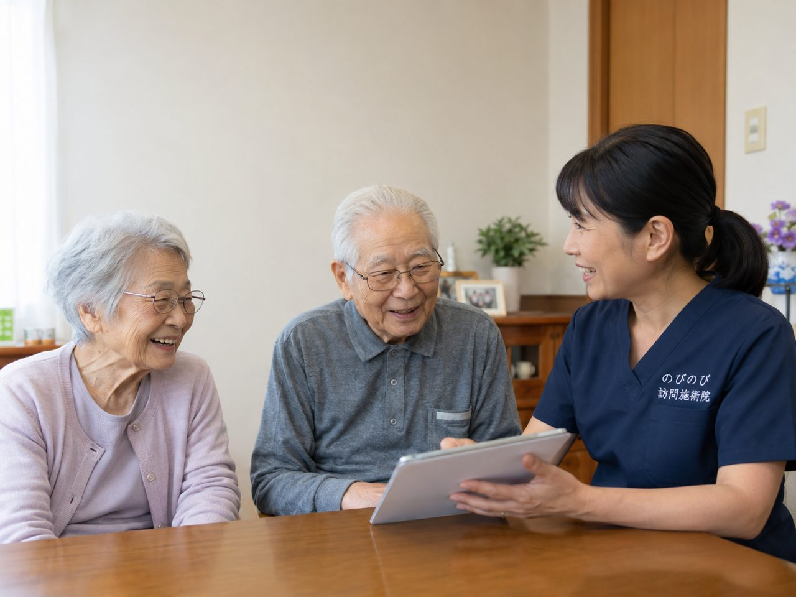

認知症のある家族に受けてもらいたいけれど、本人が「受けたい」とはっきり言えない。書類のやりとりができるか不安。そうしたご相談をよくいただきます。結論からお伝えすると、ご本人の判断がむずかしい場合でも、ご家族が窓口となって手続きを進められることが多く、始められるケースはたくさんあります。必要になるのは医師の同意書と保険証などで、書類の段取りはこちらでお手伝いします。
まず大事なところから。ご本人が意思を示せない場合でも、日ごろ介護をされているご家族が窓口になれます。いやがるときは無理に進めず、慣れることを優先します。
本人の同意がむずかしくても、始められます
認知症が進むと、ご本人が受けたい・受けたくないをはっきり伝えられないことがあります。そうした場合でも、日ごろ介護をされているご家族が窓口となって、申し込みや書類のやりとりを進めることができます。
ご家族はご本人の状況をよくご存じですから、体の困りごとを代わりに伝えていただくことで、無理のない形で始められます。本人が説明を受けられないから無理かもしれない、とあきらめずに、まずはご相談いただければと思います。
必要なもの｜医師の同意書と保険証など
医療保険で始めるには、医師の同意書、健康保険証、お持ちの方は介護保険の情報などが必要です。同意書は、かかりつけ医や訪問診療の主治医にお願いできることが多く、依頼の書類や段取りはこちらで用意します。
ご家族が一から主治医にお願いに行っていただく必要はありません。何がどれだけ必要かは、その方の状況に合わせてご案内しますので、手元の書類をそろえる負担も少なくてすみます。成年後見人がついておられる場合の進め方は、成年後見人がついている方の訪問鍼灸にまとめました。
本人の体調や機嫌に合わせて、無理なく
認知症のある方は、日や時間帯によって体調や機嫌が変わることがあります。うかがったときに強くいやがるそぶりがあれば、無理に進めません。その日は体に軽く触れるだけにする、時間帯を変える、といった調整をします。
慣れてくると落ち着いて受けられるようになる方も多くいらっしゃいますが、進み方には個人差があります。ご本人のペースを何より大切にし、いやがることを無理にしない、を基本に、少しずつ関わりを重ねていきます。
同じ担当者が続けてうかがう理由
認知症のある方にとって、来る人がいつも違うことは、不安や混乱のもとになります。できるだけ同じ担当者が続けてうかがうことで、顔なじみになり、この人ならと安心して体をあずけていただけるようにしています。
続けて同じ人がうかがっていると、ご本人の様子の小さな変化にも気づきやすくなります。気づいたことはご家族へお伝えし、必要に応じて主治医やケアマネジャーとも共有します。
ご家族の負担と不安も、受けとめます
認知症の介護は、体だけでなく気持ちの負担も大きいものです。これでいいのか、自分ばかり大変だ、と感じることもめずらしくありません。
うかがったときは、ご本人の体のケアに加えて、ご家族のお話にも耳を傾けています。介護で疲れた体について、ご自宅でできる範囲のことをお伝えすることもあります。ひとりでかかえこまず、頼っていただければと思います。
体を通じた、おだやかなふれあい
言葉でのやりとりがむずかしくなっても、やさしく体に触れられることは、安心につながることがあります。こわばった手足がゆるんだ、表情がやわらいだ、よく眠れたようだ、とご家族から教えていただくことがあります。
こうした変化の感じ方には個人差があり、鍼灸だけで決まるものでもありません。医師の治療や、日ごろの介護、生活のリズムと合わさって出てくるものだと考えています。体をほぐす時間が、ご本人にとって心地よいふれあいの時間になればと願っています。
退院後や、施設に入る前の時期にも
認知症のある方は、入院や環境の変化のあと、体がこわばったり元気がなくなったりすることがあります。退院して自宅に戻った時期や、施設への入所を考えている時期など、暮らしの変わり目こそ、体を整えておくことが助けになります。
うかがったときは、その方の生活の変化にも目を向けながら、負担にならない範囲で体を支えます。今後のことで迷っているときも、まずはご相談ください。
ケアマネジャーや主治医とも連携します
介護保険を使っている方は、担当のケアマネジャーがいることが多いものです。ご希望に応じて、ケアマネジャーや主治医と連絡を取り合い、体の様子やケアの内容を共有しながら進められます。医療保険と介護保険の使い分けは訪問鍼灸は医療保険？介護保険？で整理しています。
医療・介護に関わる人たちがゆるやかにつながることで、ご本人を支える輪が広がります。ご家族が間に立って全部を説明しなくてもよいよう、連携の部分も進めます。
費用と、始めるまでの流れ
医師が施術を必要と認め、通所して施術を受けることが難しい状態であるなど所定の要件を満たす場合に、医療保険の対象となることがあります。1回の総額は3,950円で、1割負担の方でおよそ395円、2割の方で790円が目安です。エリア内であれば別途の出張費はかかりません。お支払いは月ごとにまとめ、明細をお渡しします。週2回のペースなら、ひと月の自己負担はおよそ3,160円ほど（1割の方）が見当になります。月あたりの目安を知りたい方は訪問鍼灸マッサージの料金もどうぞ。
はじめに、お電話などで、ご本人の状態や困っていること、通院・介護の状況、ご家族のご希望をお聞かせください。必要な書類や同意書の段取りをご案内し、ご本人の体調に合わせて、無理のない形で始めます。ご本人が不安そうなときは、慣れることを優先します。まずはお気軽にご相談ください。
よくある質問
本人が同意できなくても受けられますか？
日ごろ介護をされているご家族が窓口となって手続きを進められます。ご本人の状況をふまえ、無理のない形で始められるケースが多くあります。
同意書は誰にお願いすればよいですか？
かかりつけ医や訪問診療の主治医にお願いできることが多いです。依頼の書類や段取りはこちらで用意しますので、ご家族が一から病院にお願いに行っていただく必要はありません。
本人がいやがったらどうなりますか？
無理には進めません。体に軽く触れるだけにする、時間帯を変えるなど調整し、慣れることを優先します。ご本人のペースを大切にします。
毎回同じ人が来てくれますか？
できるだけ同じ担当者が続けてうかがえるようにしています。顔なじみになることで、安心して受けていただきやすくなります。
ケアマネジャーに共有してもらえますか？
ご希望に応じて、ケアマネジャーや主治医と連絡を取り合い、体の様子やケアの内容を共有します。ご家族が間に立ってすべてを説明していただく必要はありません。